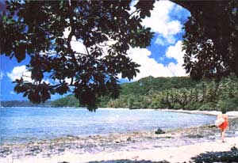
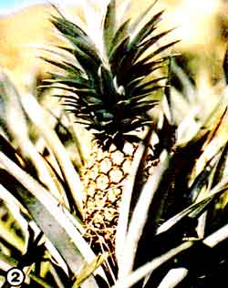
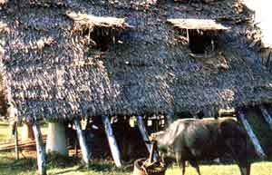
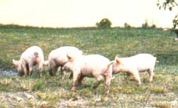
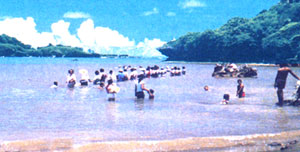
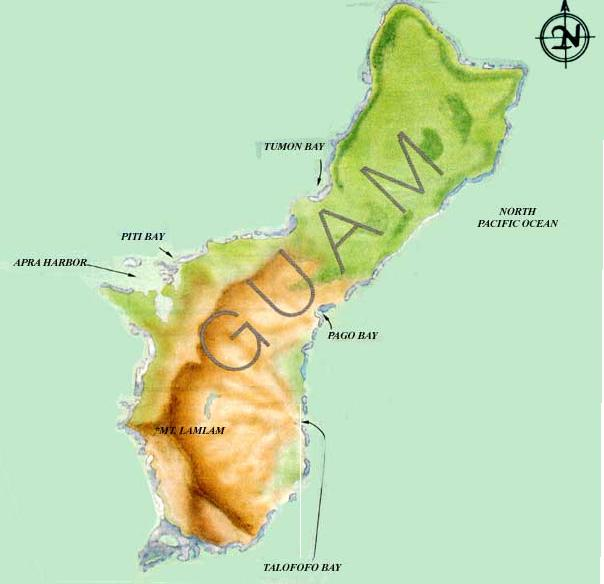

"Somebody sound the alarm! I think I got cabin fever, and I got to go where there ain't anysnow. I got to go where it's warm!" (Jimmy Buffett)
It's the middle of the Northeast's awful "no man's season" between winter and spring. The temperature outside your farmhouse is probably cold enough to freeze yesterday's mud, and it looks as if a late snow is entirely possible. Meanwhile, you can't seem to keep the woodstove full enough, and your diligently chopped and stacked log pile has been pretty much reduced to slabs of bark and big jointed pieces that won't quite fit in the firebox. And to top everything off, your entire family is probably on the verge of coming down with that dreaded malady of the North ... cabin fever.
What you need is a good stiff daydream! So you lean back ... close your eyes ... and try to imagine what life would be like on an idyllic tropical island in the middle of the ocean somewhere. You begin to envision palm trees swaying in balmy breezes, and emerald lagoons glistening in the sunlight ... and suddenly you start to feel carefree and blissfully warm.
Though you might well believe that such daydreams can never be anything but fantasies, that doesn't have to be the case. After all, my intrepid family of four set out to make our dream come true two years ago, when-spurred by the spirit of adventure and the promise of a new job for me as an island forester-we left the cold confines of our farm in the northeastern United States to homestead on the sunny little island of Guam (which is one of the Marianas) in the western Pacific Ocean. The move itself wasn't easy: It required a great deal of preparation and expense (and put us all through a good bit of anguish), but we did it! And from the moment we landed on our tropical paradise (anxious to revitalize the sense of selfsufficiency that had been paling ever since we pulled up our roots), we've never regretted our bold decision to bring a dream to life.
Of course, preparing to come to Guam was one thing ... and orienting ourselves to island life once we got here was quite another! To begin with, we were quickly introduced to a tropical hardship that most of the locals tend to take in stride ... because no sooner had we arrived in the Marianas than the islands were hit by Typhoon Betty (100-mile-an-hour winds, driving rains, and all)!
Now we'd heard that this part of the Pacific was known as the "typhoon belt" with storms-like Betty-occurring once a year or so. And we'd been told that every 12 to 15 years a typhoon of truly fearsome proportions (with winds gusting up to 200 miles an hour!) would take aim at Guam and level everything (at least everything not made of reinforced concrete) in its path. But it took good old Betty (who was plenty fearsome enough for us) to make us actually comprehend the ferocity of these tropical storms, and to bring us to the realization that homesteading in paradise was definitely going to be different from family farming back in New England!
Our first goal-once we'd survived Betty-was to purchase land. And since Guam-as of 1950-is an American territory, any U.S. citizen can own property here. However, we soon found that land was (and still is) at a premium on the island, mainly because there's so little of it in the first place. As a result, the property that was available was priced way out of our range ... at about $10,000 to $20,000 an acre! So with the option to buy land no longer open to us, we turned to the next best alternative and decided to lease a small plot of acreage to farm.
Our second goal was to build a house from recycled lumber (using techniques we'd learned in the States), but we soon discovered that scrap wood, like land, isn't a common commodity on Guam. In fact, there are hardly any trees here large enough to log, which means that most lumber is imported and therefore very expensive (one 16-foot 2 X 4 can cost as much as $5.00). Aside from its being rare, wood is very temporary building material in the tropics ... because if the ever-present termites don't destroy it, chances are the annual typhoons will!
Feeling more than a little discouraged at our thwarted attempts to put down roots, my family and I even considered the possibility of constructing a thatched hut to live in. However, the sudden vision of the straw roof being blown away in a blustery wind quickly squelched that idea! Finally (and again reluctantly), we settled for the only other affordable choice ... which was to rent property that had a concrete house in place. It's certainly not our dream home, but this storm-resistant shelter has helped us to accept (and learn to deal with) the frustrations of living in paradise.
Although homesteading in the tropics does have its share of disappointments, it also has a wealth of rewards. Take, for example, the abundant array of food that can be either grown ... caught (in the sea) ... or hunted here. Thanks to the island's endless warm weather and plentiful rainfall, we can raise more than enough fresh produce (on our relatively small garden plot) to fill our needs. We've found it easy to grow tomatoes ... corn ... lettuce ... squash ... and almost any other vegetable you could name, as well as some of the most exotic fruits in the world: coconuts, bananas, guavas, mangoes, pineapples, papayas, and more.
There are ample sources of other types of food here, too. Fishermen bring in daily loads of seafood (lobster and octopus are among our favorites!) ... the island farmers raise pigs, cows, small goats, and carabao (the local name for water buffalo) ... and some folks hunt the wild deer, pigs, and fruit bats that are still quite common. All things considered-and even though we may not own a paradise farmstead yet-we're sure not going to go hungry while we work toward achieving our goals!
Aside from food, the islands are also rich in potentially usable, but relatively untapped, natural sources of energy ... the sun, the sea, and the wind! It's a real shame that-because of a lack of information, expertise, or whatever-the islanders aren't more aware of these free sources of power. For instance, most Guamanians are still totally dependent on expensive imported oil to generate electricity (a situation I find particularly astounding, given the fact that the harnessable tropical breezes are so reliable).
However, we're hoping to take advantage of some of our new home's abundant energy resources. As a matter of fact, I'm constantly thinking up new schemes that could help us make better use of nature's gifts. One idea I have is to experiment with accretion technology (in which an electric current is run through a wire grid and causes the sea's minerals to build up on the metal surface) to create a house for my family ... using a small wind generator to provide the necessary "juice". [EDITOR'S NOTE: See "'Grow' Your Own Buildings" in MOTHER NO. 62, page 118.]
I'm also considering trying to use the ocean "husbandry" technique of aquaculture to raise such delicacies as shrimp and eelwhich are constantly in demand-for a home seafood business. And I've even thought about going into the Christmas tree trade. After all, these evergreens are flown in every year ... and I don't see why-given my forestry experience-they couldn't be grown and sold right here!
Perhaps our plans sound a bit ambitious, but my family and I truly believe that with all the opportunities that are available to us here, we'll soon be able to be much more self-reliant on Guam than would ever have been possible back on the mainland. And there are other, equally important, benefits of life in the islands ... a quiet'-, walk along a palm-fringed beach under a full moon, spearfishing in a lagoon in the middle of January, and-in general-just being able to enjoy a more slowly paced and warmer life. All these add up to make homesteading on Guam a veritable daydream come true.
|
 PHOTOS BY THE AUTHOR [1]""Blue Lagoon"" (as we call this beach) is not only sunny and warm, but usually blissfully deserted! |
 Guam-grown pine apples are the best in the Pacific. |
 A traditional thatched hut with a water buf falo in the foreground |
|
 Pigs are free to roam the island. |
 Villagers harvestinga school of mackerel in Talofofo Bay. |
 |